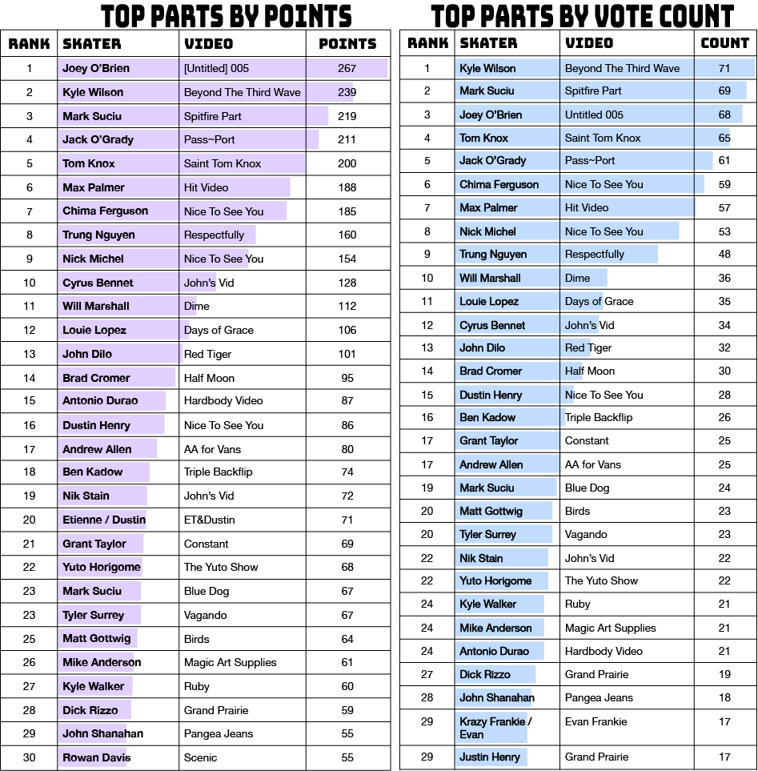
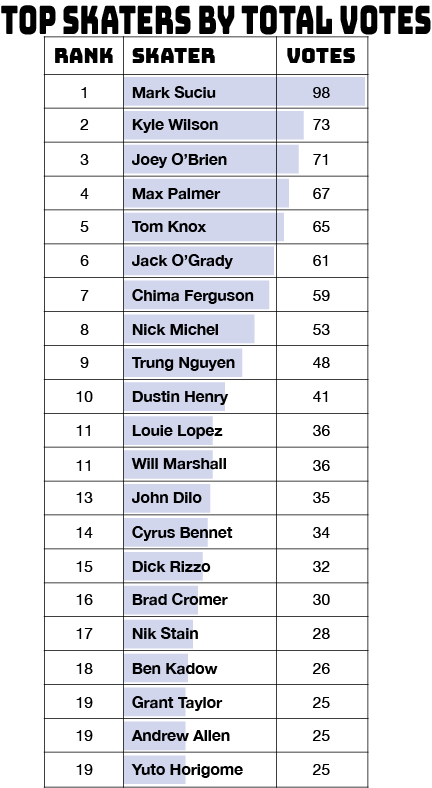
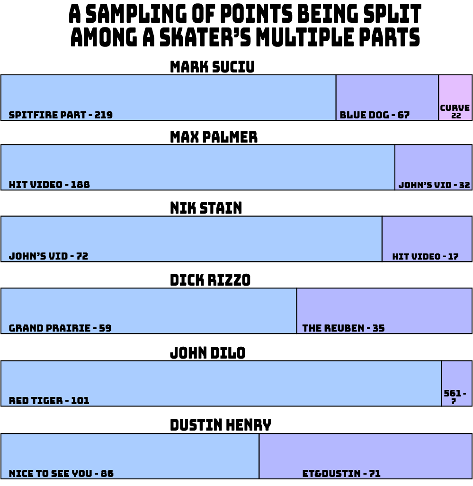
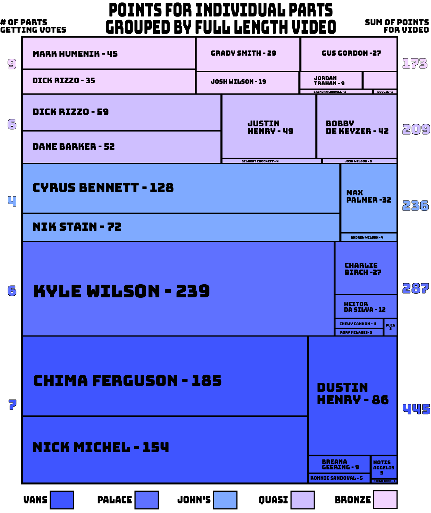
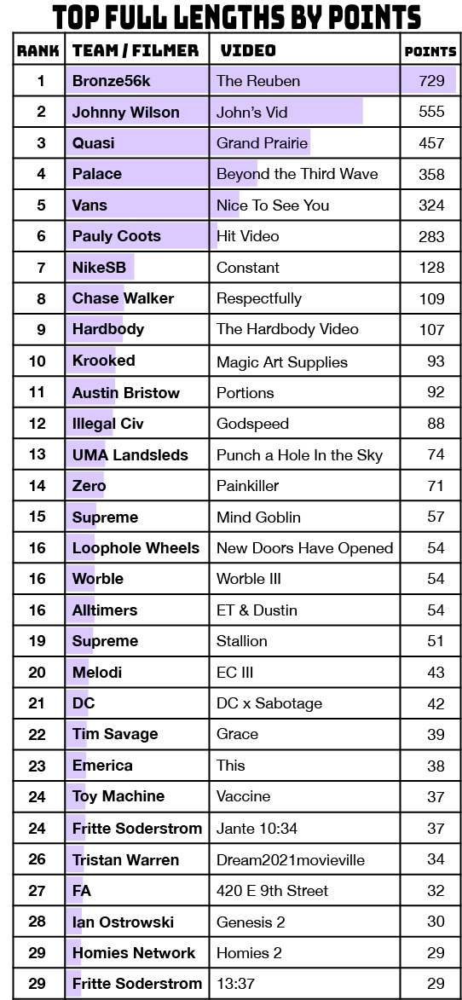
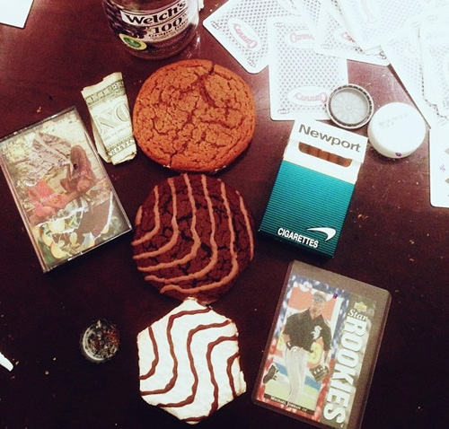

It is with great honor and promises of adequate compensation in apparel that the 4Ply team has been tasked with tallying the 2021 Quartersnacks Readers Poll ballots. With this privileged access and an insatiable eagerness to quantify, we find ourselves rummaging through the data looking for the stories within the votes.
So hold on tight to your graphing calculators as we travel deep into the 2021 results.
Data & Methodology
Like last year, readers submitted their votes through the QS website from Nov 29th through Dec 3rd. Thusly, edits released after this timeframe, though technically 2021 skate videos, will have to wait for next year's poll. Subsequently, videos from December 2020 are eligible for inclusion here.
Readers chose their top 5 parts for individual skaters (released as singular stand-alones or parts of larger group videos) as well as their top 5 full length projects. The results for individual parts and whole videos were kept separate, essentially creating two distinct datasets. Because all the votes were ranked, 4Ply applied a weighted points system to votes; So a part ranked #1 would be awarded 5 points, #2 would get 4 points, and so on.
A part (or video) could only be counted once per ballot. In cases where a voter listed the same part multiple times (and it happened a bunch, ya cheaters), only the highest ranked appearance was counted.
A skateboarder could appear on the Parts ballot multiple times given that each vote was for a different part. While many skaters had multiple parts in 2021, this ballot situation didn’t occur frequently; Voters tended to vote for either one part or another from a single skater, but rarely both.
Shared parts (and there were 2 that factored this year) were logged as a single part by both skaters, regardless of which skater’s name was entered. So a vote for Evan Wasser in Evan Frankie is also a vote for Krazy Frankie in Evan Frankie. The other shared part was ET&Dustin.
If you haven’t already, hit up Quartersnacks for the official results article.
Individual Parts
Let’s take a look at the top 30 Parts of 2021.
Because the votes are ranked, the part that got the most points was declared the top part, which was [Untitled] 005 for Alien Workshop’s Joey O’Brien. Congrats, Joey.
Anytime we're working with votes that are ranked, it can be a fun exercise to compare the weighted points results with the unweighted count results (where all votes are equal regardless of ranking). Check It out.

It is quite notable that Joey O’Brien drops down to 3rd place when we simply count votes and Kyle Wilson takes the top spot with his Beyond the Third Wave opener for Palace.
What this means is that Kyle and Mark Suciu appeared on more ballots than O’Brien, but O’Brien consistently appeared at higher ranked positions on those ballots. As 4Ply drilled deeper, it was revealed that Joey O’Brien got the #1 vote 26 times, where Kyle Wilson got it 18 times. So, essentially, if readers could only pick their one favorite skate video, Kyle would've come out on top.
Jack O’Grady also benefitted from ranked choice voting, with his 19 first place ballots pushing him up a spot in the points line up.
It is worth noting that O’ Brien, Wilson, and O’Grady’s parts were all filmed while they were amateurs, but all 3 are pro right now. So people go hard as professional status approaches, as they should.
It’s also worth considering how a skater’s choice to split their yearly footage into multiple parts can affect their ranking. We can explore this by getting the sum of unranked votes across all of a skater's parts. Take a look.

As you can see, and it really isn’t a surprise, that when we combine parts into a total for a skater, Mark Suciu dominated in 2021. And this is even without Flora III, which was yet to be released.
Similar to Mason Silva’s 2020 overall dominance of skateboarding (with 6 parts) but then failure to hit the top Part spot in the QS Reader Poll, it is clear that dropping several edits in a calendar year is a good route to SOTY but will split the vote for a single part to dominate these standings. To put it another way; SOTYs, by utilizing the multi-part strategy, don’t make the Part of the year.
Consider this: Suciu didn’t get SOTY in 2019 when all his footage for the year was released in the single Verso part. However Verso was the highest ranking video for the year 2019 in the Quartersnacks Decade Poll. This trend runs deep with the only SOTYs to also have the QS top ranked video for the year being Tyshawn in 2019 and Ishod in 2013.
While were on the subject of “Splitting the Vote”, several skaters got votes for multiple parts in the 2021 poll with varying effects. Behold.

We already explored Mark Suciu’s 3 part split.
A skater with a similar 2021 output, but with different results, would be John Dilo. Dilo had, like, 9 different parts drop in 2021 but did not suffer much vote-splitting at all as Red Tiger was clearly the preferred part for QS readers.
Max Palmer and Nik Stain both got split between John’s Vid and The Hit Video, but with Max leaning heavily towards Hit and Nik getting the inverse with John’s Vid being dominant.
Dick Rizzo got split pretty hard between The Reuben and Grand Prairie, but the skater who got their votes almost equally split was Dustin Henry, who saw votes for Nice To See You and the shared ET&Dustin part for Alltimers. Keen readers will remember from this article’s Methodology section that votes for Etienne in that shared parted also benefitted Dustin, so there’s that to consider as well.
Other Parts Observations
- Number of ballots cast for parts: 350
- Number of unique parts getting votes: 260
- Number of parts that got only 1 vote: 132
- Number of parts that got only 1 vote but that vote was ranked #1: 9
- Of the top 30 parts (by points) 43% were part of a full length video.
Let’s delve into that last stat with another chart.
We wanted to see what full length videos produced the most unique Part votes, and if that differed from the Top Video results. To do this we totaled the points from each individual part within a full length, as well as counting the number of parts that got votes; This is expressed here as a stack of ‘treemap’ charts.
Y'all ready for this?

Vans' Nice To See You video cleary dominated the points total. 7 skaters contributing to the total, including hugely popular parts from Chima and Nick Michel. However, the Bronze video had the top count of unique skaters getting votes for their parts with 9.
Dick Rizzo was both the second most popular skater in the Bronze’s The Reuben video as well as the most popular skater in Quasi’s Grand Prairie, which has 6 parts getting votes.
Palace’s Beyond the Third Wave also saw 6 different skaters getting votes for their parts, with a very heavy lean to Kyle Wilson. Heitor’s fans definitely preferred his Man Of Das World edit over his Third Wave part by a ratio of almost 4 to 1.
And a special shout out to John’s Vid by Johnny Wilson, who saw each and all of the 4 skaters who had parts get individual part votes.
Full Length Videos
For the Full Length Videos poll, it was pretty much a fucking blow out.

The Reuben dominated.
Which is interesting, since the Individual-Parts-Grouped-By-Videos treemap chart was stacked heavily in favor of Nice To See You. What we have here what Aristotle indentified as "the whole being greater than the sum of its parts". The Vans video had some popular individual parts, including 3 parts in the top 20. Hell, Chima’s part alone got more points than all of the individual Bronze parts combined! The highest rated individual part in The Reuben, Mark Humenik's, was ranked just 34th!
But therein lies the strength of The Reuben. It wasn't just a showcase for one or two skaters making a run for personal accolades. It's cohesive and hard to slice up. It stands out in its entirety. It's the kind of video where you watch the whole thing every time, which is exactly what a successful full length skate video should be.
The unranked vote count chart would look nearly identical to the weighted points charts (and thus we didn’t bother with the graphic). Beneath the surface, though, lies the twist that John’s Vid actually got more #1 ranked votes than The Reuben (69 to 54), but The Reuben appeared on a lot more ballots than John’s Vid (203 to 141).
Other Full Length Observations
- Number of ballots cast for full lengths: 341
- Number of unique videos getting votes: 161
- Number of videos that got only 1 vote: 71
- Number of videos that got only 1 vote but that vote was ranked #1: 5
- Number of voters who wrote out the full title of the Bronze video: ***THE REUBEN*** (OFFICIAL VIDEO) (HIGH DEFINITION) [BRONZE56K HARDWARE EXCLUSIVE] {VERY RARE}(2K21): 2
- Number of votes for Deathwish Uncrossed, which ranked 3rd in the 2020 poll: 22
(Uncrossed and other 2020 videos were not included in final rankings, regardless of points total) - ET&Dustin got 22 votes as a full length. Nobody voted on it as both a full length and individual parts in the same ballot.
Quartersnacks' officiants declared ET&Dustin to be a single part and thus was not included in their full length rankings (which then, in turn, boosted the DC x Sabotage video into the Top 20. - There were 3 votes for Creature’s Gang Green video even though it didn’t have a theatrical premiere until 9 days after the voting closed.
- 4 videos of the top 20 were not brand affiliated: Johnny Wilson’s John’s Vid, Pauly Coot’s Hit Video, Chase Walker’s Respectfully, and Austin Bristow’s Portions.
For the record, Godspeed, Mind Goblin, Hardbody, and ECIII were considered “brand videos".
Year-Over-Year Comparisons
Before we go, let’s compare some Parts and Video results year-over-year to see how things are trending.
- In 2021, Joey O’Brien won by 28 points.
In 2020, Tom Knox won by a whopping 534 points. - The inverse is true with Full Lengths.
In 2020, Cons’ Seize the Seconds video won by just 18 points over FA’s Dancing On Thin Ice.
In 2021, The Reuben won by a sizable 174 points. - Skaters who’s parts made it into the top 30 in both 2020 and 2021: Louie Lopez, Cyrus Bennet, and John Shanahan.
- Tom Knox was the only skater to go Top 10 in two consecutive years. (1st in 2020, 5th in 2021) - both times with Atlantic Drift chapters.
- In 2021, only Mark Suciu made it into the top 30 more than once.
In 2020, 3 skaters made it in to the top 30 multiple times (Mason, Louie, & Pedro Delfino). - 0 women made it into the Top 20 this year.
In 2020, 1 video by a woman made it: Alexis Sablone's Cons part was ranked #4. - Vans was the only brand to have full lengths in the Top 5 two years in a row with Alright, OK ranking 4th for 2020 and Nice To See You being the 5th most popular video of 2021.
- In both 2020 and 2021 - 3rd place went to a Spitfire part by the skater who would win SOTY.

There are plenty more stories nestled deep within the data but we can sense your brains are getting full. Tune in next time where we dig into the 2021 #QSTop10 and shit really gets complicated.
Thanks to everyone who rocked the vote.
Thanks to Quartersnacks for everything they do.
Follow 4Ply on the 'Gram and on Twitter where you can dis our code for not being elegant enough and hit us up for free stickers.